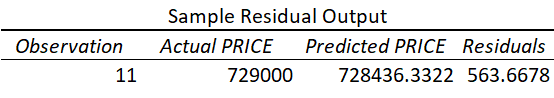

Abstract
Real-estate market dynamics in Los Angeles County affect the decision-making
framework of all stakeholders involved in the buying or selling process. For first time home
buyers and realtors alike looking to expand their market reach, the methodologies presented in
this paper add value in this endeavor. Leveraging exploratory data analysis lends itself to
comparative metrics between prices and home characteristics not limited to size and year built
and expanding into specific characteristics that portray relationships between all variables of
interest. To establish and understand these key performance indicators (KPIs) from a selective
sample, a reproducible, excel-based model is produced. Limitations are discussed based on the
sample size and suggestions are made for further refinement utilizing other sampling
methodologies and software packages.
Real Estate Prices in Los Angeles – A Case Study from Redfin
There are several stakeholders involved in the real-estate decision-making framework.
Real-estate corporations and individual decision makers alike are often tasked with resolving
where and what to buy as they partake in their search for single family housing properties.
However, one must choose an area of focus, especially as a future home buyer. This carefully
selected dataset was chosen for a specific geographic region of the Los Angeles County in
Southern California. The data is sourced from Redfin as opposed to other real-estate resources
due to its ease of public access for MLS (Multiple Listing Service) properties. This dataset is
represented by a flat .csv file which has been downloaded at a static moment in time in
September 14, 2020; nonetheless, contained herein are all of the relevant parameters in helping
to establish trends in the Los Angeles Housing Market. These parameters serve to identify
patterns between price, housing type, and location, to name a few variables of interest.
Considerations are made for the sample size, as the first 100 listings are examined, thereby
extracting an appropriate sample for the ensuing analysis. Establishing pricing patterns by
location and disposition of home will be of great benefit to the stakeholders involved.
For example, a realtor might leverage this analysis to target specific zip codes with higher
mean home prices. This action could potentially benefit the realtor visa vie an increase in
commission from sales. The consumer, on the other hand, may trade neighborhood (zip code) for
affordability. One such variable versus another only sheds light on a particular relationship. For
this reason, additional variables need to be considered. Furthermore, one may look at the year
that a house was built as a strategic advantage or disadvantage. This paper aims to examine these
independent (predictor) variables against the dependent variable of price. In so doing, if a strong
correlation exists, the model can prove to be beneficial and hold merit.
A similar study has been conducted where “home values vary across neighborhoods. This
implies that certain neighborhood characteristics are more desirable than others” (Hipp & Singh,
2014, 254). The goal of the research was to determine if there was a relationship between “New
Urbanism—population density, older homes, a lack of concentration of single family units” (
Hipp & Singh, 2014, 254). Additionally, the research examined the Playa Vista Community,
attributing revitalization to new infrastructure and addition of important technological companies
like Youtube, Microsoft, and Fox Sports (Hipp & Singh, 2014, 258). Moreover, this study
incorporated a similar dependent variable of home price (Hipp & Singh, 2014, 260).
In a comparable study, analysts sought to determine “how the housing market will
function in the post housing market bubble decade. It is a useful time to take another look at how
the housing market behaves and what underpins housing prices” (Clark, 2011, 1).
Exploratory Data Analysis
Exploratory Data Analysis
As shown in the accompanying the location and dispersion information confirms that
certain disparities exist. The median house price is $742,450.00, while the average is much
higher, $960,246.46. There exists an astounding variance between the minimum and maximum
value ($5,519,000.00) and number of days on the market. Since such a large range between data
points for days on the market, other variables of interest will be examined further in the paper to
establish relationships as they arise.
Figure 1.
|
Location and Dispersion
|
Price
|
Days on Market
|
Year Built
|
|
Mean
|
$960,246.46
|
31
|
1975
|
|
Median
|
$739,900.00
|
16
|
1981
|
|
Minimum
|
$350,000.00
|
1
|
1911
|
|
Maximum
|
$5,869,000.00
|
345
|
2019
|
|
Standard Deviation
|
$761,458.87
|
50
|
29
|
The following figures show varying degrees of correlation in the variables of interest.
Figure 2.
Year Built vs. Price

Note. The year built of the house is loosely correlated with price, offering no significant
association or correlation.
Figure 3.
Days on Market vs. Price

Note. Days on market has a greater (more substantial) positive correlation with price
Generalized Linear Model (GLM)
\[
\begin{align*}
Price~(in~USD)=\beta_0 + \beta_1Year\_Built\begin{pmatrix}
1 = (1911 - 1932)\\
2 = (1933 - 1954)\\
3 = (1955 - 1976)\\
4 = (1977 - 1998)\\
5 = (1999 - 2020)
\end{pmatrix} +\beta_2Bedrooms\begin{pmatrix}
1 = (1911 - 1932)\\
2 = (1933 - 1954)\\
3 = (1955 - 1976)\\
4 = (1977 - 1998)\\
5 = (1999 - 2020)
\end{pmatrix}
\\
\\+\beta_3HOA(Y|N) +\beta_4Region\_in\_LA\_County\begin{pmatrix}
1 = Antelope~Valley\\
2 = Los~Angeles~County\\
3 = San~Fernando~Valley\\
.\\
.\\
.\\
10 = West~Los~Angeles
\end{pmatrix}
\\
\\+\beta_5Housing\_Type\begin{pmatrix}
1 = SingleFamily\\
2 = Townhouse\\
3 = Condo/Co-op\\
4 = Multi-Family\\
\end{pmatrix} + \epsilon
\end{align*}
\]
where
\(\small\ Price\) is the variable of interest (the dependent variable);
Independent variables: \(\small\ Year\_Built, \small\ Bedrooms, \small\ Region\_in\_LA\_County, \small\ Housing\_Type\)
\(\beta_0\) is the intercept, or constant offset term;
\(\beta_{(1~to~i)}\) is the regression coefficient; and
\(\epsilon\) is the error factor associated with each regression coefficient.
In this generalized linear model (GLM), the variable of interest is Price (in $USD). It is the
variable (y) that is dependent on the following independent variables (x) ranked in descending
order of impact. Year_Built has a higher positive correlation on selling price as newer homes are
“selling at higher prices than those that were built in the past” (Manausa, 2012). Lastly, the
Region_in _LA_County is of a more categorical nature; thus, while this does illustrate price
dynamics by market location, examining this data last fits the model more appropriately.

Table 1 represents the characteristics by housing type (Single Family, Townhouse,
Condo/Co-op, and Multi-Family) for the sample population (n = 100). 48 of these 100 homes
sampled from the redfin dataset are single family. 10 of them are town homes. 38 are condo/coops, and 4 are multi-family housing units. Of the 100 sampled herein, 13% of these homes were
built between the years of 1911-1932. 15% were built between 1933-1954. 19% were built
between 1955-1976. However, more than half of these homes (53%) were built between 1977-
2020. Notwithstanding, an interesting characteristic to note is that of single-family homes, where
most of these properties (31%) were constructed between 1933-1954. The original dataset
contains the specific year as it pertains to each row; however, these years were bucketed for the
sake of a more standardized model.
The most common number of bedrooms are 2 (31% of the dataset). 46% of single-family
homes are known to have 3 bedrooms. 50% of the 10 town homes in this sample have 2
bedrooms. What stands out the most in the “Bedrooms” variable is that 75% of the multi-family
homes sampled have 4 or more bedrooms. This is proportional to the scale (size) of the housing
unit.
The data also examines whether each housing type has an HOA or not. 56% of the
properties sampled do have an HOA, whereas 44% do not. This would suggest, at least on a high
level, that most of the properties are condominiums and/or town-homes. However, upon closer
examination, this is not the case. The dataset presents an equal number of condominiums and
town-homes (n = 48) as single-family homes. The 19% visibility of homeowner’s associations in
single family homes contributes to the spike of HOA prevalence across this sample.
Furthermore, Los Angeles County presents a wide range of observable data, with 50 cities
(accounting for half of the observable records) in this dataset. Shifting the focus from city to
region produced ten meaningful areas of focus. Whereas Antelope Valley and South Los Angeles
showed no material (not statistical) significance, that 10% of all town homes in this sample are
sold there. 30% of this type of home exists in this sample for the San Fernando Valley (the
region selling that sells the highest percent of this type of home in the sample). Moreover,50% of
the data exists in the city of Los Angeles, San Fernando Valley, and Santa Clarita, which account
for 30% of all regions represented here. Los Angeles (city of) accounts for 22%, San Fernando
Valley - 18%, and Santa Clarita - 10%, respectively. South/ Southeast Los Angeles, West Los
Angeles (and West Hollywood), as well as the Antelope Valley comprise the remaining 50% of
all housing units represented in this sample. 75% of all multi-family housing units exist in the
city of Los Angeles proper. This table shows statistical significance between the variables of
interest and housing type at an α level of .05 (P <.0001).
Limitations
In order to yield a net benefit visa vie reproducibility in subsequent iterations of the
methodologies described herein, the limitations pertaining to this dataset warrant further
examination to mitigate against pitfalls in further repeat studies of a similar magnitude. To
accomplish this task, we must first discuss these limitations in terms of accuracy versus
precision. The data was sourced as a static .csv file on the fourteenth of September 2020,
assuring precision through this date only. Its accuracy cannot be fully guaranteed for the
following reasons. Real estate data changes in real time, as houses are bought and sold. Thus, a
more refined model should take the same data into account, but not through a static .csv file. For
example, statistical packages and libraries in R Studio (i.e., read .csv, readr, etc.) are capable of
loading this data repeatedly over the course of a few weeks while establishing summary
statistics, but with the added bonus of tracking variances in results as the housing market
changes.
Furthermore, redfin.com, while rich in location-based housing information nationwide,
does not lend itself to the best exporting capabilities to meet the needs of full size and scope for
any given market. Consequently, there exists “a 350 home cap on data downloading” (Murphy,
n.d.). Thus, restricting the dataset to a sample size of the first n = 100 rows of data without a
proper randomization technique, creates yet another challenge in data integrity. To obtain a
sample that is more representative of the population as a whole, a simple random sample would
suffice. Here, the researcher could open the .csv file, save it as an .xslx file to keep the formulas,
and create a new column (A) and fill the cells down in ascending order (0,1,2,3…350). The
adjacent column (B) could contain a formula =RANDBETWEEN($A\(2,\)A$352) where each
cell contains a value between the top and bottom cell in the dataset. Filtering the new column
down to values zero to one hundred will yield the desired results.
Lastly, creating a significant model for home prices in Los Angeles County based on
limited information at only one moment in time presents the bottleneck of bucketing or
classifying the many cities within Los Angeles County. Out of these 100 observations, the report
yielded 50 unique cities, which would be unsustainable for a linear regression model. Initially,
ten cities with the highest average home price were chosen with the intent of illuminating
insights on the composition of home prices across the county of Los Angeles. However, to
mitigate against any potential bias resulting from this sample, a better methodology was
produced, where the cities were bucketed into twelve geographic regions. This was further
refined and the geographic regions were narrowed down to ten categories for a concise, yet,
more robust and accurate model.
Regression Analysis of Project Data
Figure 4.
Summary Output
 Note. This model shows a somewhat strong goodness of fit based on several factors not limited
to statistically significant P-values.
Note. This model shows a somewhat strong goodness of fit based on several factors not limited
to statistically significant P-values.
In further refining and assessing the model, three of the independent variables are
incorporated into a more robust framework, thereby commencing in a multiple regression table
from which we are able to draw inference from. Microsoft Excel’s built-in data analysis toolpak
was used to create the above summary output. This table produced the following regression
statistics. Since this model examined more than one independent variable, we look at the
multiple R first. This value, otherwise known as the correlation coefficient, exposes the exact
linearity as .48, thereby showing that there exists an overall strong positive linear relationship.
Upon further examination, we look to the R-squared (\(R^2\))
as the coefficient of
determination to present the percent variance for price (the dependent variable, y) as explained
by the accompanying independent variables of beds, year built, and HOA. In this case, precisely
23% of the variability in price is explained by these accompanying predictor variables. The
subsequent value of the adjusted \(R^2\)
simply considers the number of parameters (independent
variables) and adjusts accordingly, at a value of .21 (or approximately 21%). Based upon the
introduction of these additional parameters, we must take them into account for a more
conservative estimate.
Moreover, the P-values in this summary output table are all statistically significant (less
than 𝛼 = .05), whereas Table 1 assumed statistical significance at P <.0001; nonetheless, the
model holds merit. We finalize this multiple regression analysis by noting the residuals (variance
in observed and predicted values) of the n = 100 price points, where
\[y_1-\hat{y}_1,...,y_n-\hat{y}_n\]
From the 100 observations, we examine the one that has the lowest variance between the
actual price (y) and the predicted price (\(y_1\)). This is confirmed to be the 11th observation with a
recorded price of 729,000. This happens to be $13,450 below the median housing price in this
sample, and the one with the least variability.
Figure 5.
Sample Residual Output

Note. The difference between the actual price of 729,000 and the predicted price of 728,436.33
is the residual value of 563.67.
Since this is the value with the least variability in the dataset and the closest to zero, it is the best
prediction in the sample. Furthermore, to narrow our focus to a one sample independent variable
x in a single regression model, we establish the following hypothesis test.
\[H_0: \text{there exists a linear relationship between housing prices and HOA presence}\]
\[H_\alpha: \text{there exists no linear relationship between housing prices and HOA presence}\]
Examining the P-value of 0.001429009 specific to the HOA variable, we see that it is
statistically significant and lower than the common alpha value of .05, thereby rejecting the null,
\(H_0\) at the 95% confidence level. In favor of the alternative hypothesis, \(H_\alpha\), we conclude that there
exists no significant linear relationship between housing prices and HOA as a factor of
consideration.
References
Clark, W. A. (2011). Prices, Expectations and the Changing.
Housing, Theory and Society, Vol.(28), 1.
https://doi.org/10.1080/14036096.2011.599174
Hipp, J. R., & Singh, A. (2014). Changing Neighborhood Determinants of Housing.
City & Community, 1.
https://doi.org/10.1111/cico.12071
Manausa, J. (2012, December 10). How Does Year Built Affect A Home’s Value? Joe Manausa Real Estate.
https://www.manausa.com/blog/year-built-affect-home-value/
Murphy, M.
Downloading Data. Redfin.
https://support.redfin.com/hc/en-us/articles/360016476931-Downloading-DataRedfin.
Redfin. (2020, September 14).
Redfin Data - Los Angeles. Real Estate, Homes for Sale, MLSListings, Agents | Redfin.
https://www.redfin.com/stingray/api/gis-csv?al=2&market=socal&min_stories=1&num_homes=350&
ord=redfin-recommended-asc&page_number=1®ion_id=11203®ion_type=6&sf=1,2,3,5,6,7&status=9&uipt=1,2,3,4,5,6&v=8